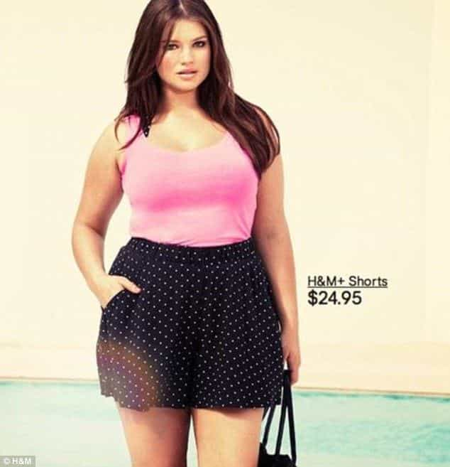
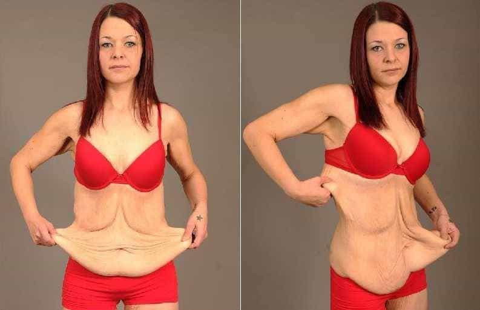
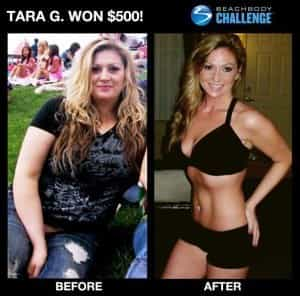
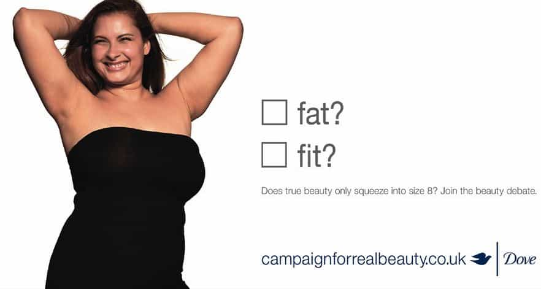
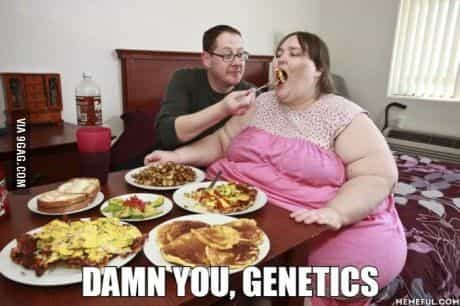
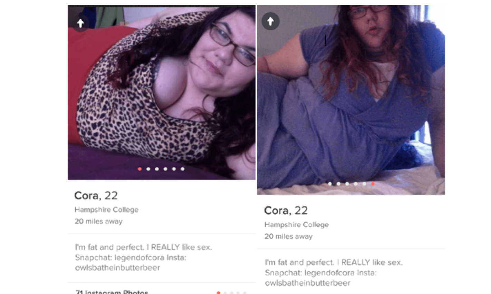
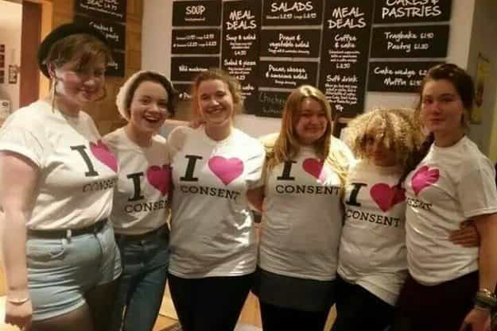

The other day I received news about one of my beta friend’s girlfriend, a nasty, spiteful, ignorant woman who convinced my friend to blacklist me because I was “evil” (read: telling my friend in her presence that he could score prettier girls and should dump her) and a “rapist” (read: I was not shy about my taste for bedding attractive, feminine, submissive girls using aggressive game).
That girl was obese but her face was quite homely and she would have been cute if she did not look like a flesh balloon. The bitterness of her obesity made her a hag, so she got a gastric bypass (sport and a good diet were really too much to ask) and finally lost the extra pounds.
But it appears that she still has the same terrible attitude and even after I and the taxpayer paid for her operation, not an ounce of humility came out of it. She is slimmer now but she will always remain a fat bitch in my eyes.
I am convinced that she would have been humbled if she actually had to work hard to lose weight. So here are my two cents on how fat girls can avoid this situation and transition into a slimmer, happier life.
1. Compensate with other qualities

Being nice is paramount. In the same given situation, people will be less patient and understanding if you are fat. They might give you a pass if you are attractive.
Stop arguing, stop being defiant or snarky. Be normal, humble and patient. Make it a priority to be genuinely kind. Without being stupidly friendly, don’t let the rage created by your ugliness translate to other people.
Be a good homemaker. Know how to cook and receive guests. Take care of yourself and your home. Be reasonably clever and well-behaved in society. Be helpful and do good around you.
2. Be realistic about the situation

Get your goals in order about how much weight you want to lose and be disciplined about it. Know that if you are beyond a certain point of obesity, even heavy surgery and extreme diet and exercise won’t give you back the body you were given before you chose to destroy it.
Scars, excess skin, and squishy flesh might be your future if you don’t do it right. For desperate cases, progressive fat loss over the years should be the solution so skin has the time to shrink.
3. Do more exercise and eat better

Practice physical activity aimed at fat loss while keeping a reasonable amount of muscle. Start high-intensity training involving compound exercises and cardio at least three times a week while following a low-carb, low-sugar and high protein diet such as the Keto or Paleo diet.
While I despise people who are overweight and do nothing about it, I respect those who make the effort and genuinely want to change, so don’t get into a gym class if you can’t stick to it. There’s no point doing five minutes of elliptic trainer if forty minutes are spent talking to other girls around the machine. Make fitness an essential part of your lifestyle so exercise becomes natural.
4. Stop consuming the mainstream media

The MSM is not your friend or here to help. It is here to make you feel good despite your situation and consume even more. Get off social media where random people on the Internet and your liberal friends will tell you that you are beautiful so they can have their little buzz of virtue signalling before going back to mocking you. You need to be in a mental state of isolation to focus on what you have to do.
Stop reading feminist blogs and believing in fables like the “fat acceptance” or “body positive” trends. Men want pretty, thin women. It has always and always will be true.
If you need, use alternative media and inspirational stories for your motivation, within reason.
5. Accept that it is your fault if you are fat.

Beauty standards have not changed. It is not your bad genetics or the patriarchy that force you to eat more calories than you spend. You alone are guilty of stuffing your face while having a sedentary lifestyle and not exercising enough.
Despite what Cosmo and Dove might tell you, you are not beautiful. You send an image of poor health, lack of will and laziness. You are destroying the body that was given to you, an amazingly complex and effective machine that was forged out of millions of years of evolution, and you bear sole responsibility for destroying it.
6. Stop being sluts

By the way that is the fat girl known as Trigglypuff
I slept with a few fat girls in my blue pill days. Never sober or with ones fatter than Amy Schumer, but I felt great shame the next morning. They probably felt all right as they had the confirmation that they could score despite their fatness. It did not do a service to anyone, her or me. Betas just see overweight girls as low hanging fruits or the promise of a sexual release that would save them of their incel misery.
If you are single, focus on the issue at hand. If you are with a man, stay with him. If he leaves, let him go but don’t look for another one. When you are slim, find one good man, marry him and have children.
7. Prevent further damage

We might want to have sex with a fitness model even if she has blue hair and tattoos (even if the law of red flags specifically remind us not to), because her body and face match universal beauty standards but a fat girl can’t pull that off.
Do not get any shitty tattoos, body modifications or a short haircut. You are already unattractive as it is. Get rid of your tattoos, remove piercings not located in your ear lobe and grow you hair below shoulder length at the very least and keep on growing it.
About the haircut, go for something nice and classic. No shaving or experimental stuff. If you did a stupid choice and dyed your hair in any other colour than something that exists in nature, dye it back to a natural shade.
8. Stop eating or drinking out
Cook in. It is cheaper and will teach you a useful skill. If you miss social interaction, invite your friends for dinner or visit them at their place. Stop drinking alcohol or go out at night where they serve alcohol. The only liquid that you should ingest is water. You have a mission, don’t get tempted to relapse.
Il n’y a plus qu’à s’y mettre
I sincerely hope that this article will spread and give some needed tough truth for heavy girls in denial. I am just putting it out there even if I know that reason and facts are not appealing to women.
As much of the heathen bastard that I can be, I still wish healthier relationships between men and women and even if only one girl successfully slims down and lives a happier life after reading this, I reached my goal. Some may ask me if I have similar advice for fat men. I do: you are an adult man. Deal with it alone.
Read More: 10 Steps To Stop Being A Fatass